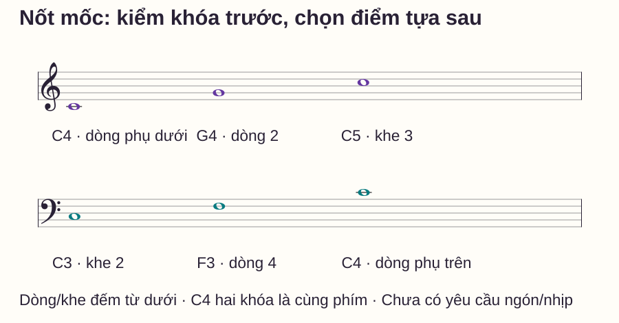
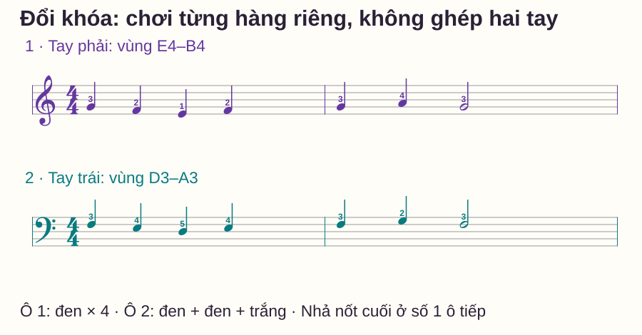

Đọc nhạc
Đọc piano bằng nốt mốc: chọn điểm tựa trên hai khóa nhạc
# Đọc piano bằng nốt mốc: chọn điểm tựa trên hai khóa nhạc
Bạn đã nhớ vài nốt khóa Sol, nhưng khi chuyển xuống khóa Fa lại bắt đầu đếm từng dòng. Một nốt đứng gần điểm đã biết cũng khiến bạn mất nhiều bước tìm kiếm. Lúc này, điều cần tập là chọn điểm tựa trước khi gọi tên nốt.
Bài này hướng dẫn cách chọn mốc ở hai khóa và kiểm lại quãng tám trên đàn. Khác với một bảng tên nốt để học thuộc, bài tập yêu cầu bạn nói rõ đường tìm: từ mốc nào, đi hướng nào và qua bao nhiêu vị trí. Bạn có thể thực hành từng tay, không cần ghép hai khuông ngay.
Trả lời nhanh
Nốt mốc là một nốt bạn nhận được trực tiếp trên khuông và nối chắc với phím đàn. Khi gặp nốt chưa biết, nhìn khóa trước, chọn mốc đã thuộc ở gần rồi đi qua các vị trí dòng và khe liên tiếp. Ví dụ, trên khóa Sol, nốt ở khe ngay dưới G4 là F4; trên khóa Fa, nốt ở khe ngay dưới F3 là E3. Mốc gần chỉ có ích nếu bạn nhận đúng nó. Hãy gọi cả tên nốt và vùng đàn, rồi kiểm bằng một đường khác khi chưa chắc. Luyện với thứ tự nốt thay đổi để phân biệt đọc ký hiệu với nhớ mẫu ngón.
Vì sao biết tên các dòng vẫn đọc chậm?
Nếu mọi nốt đều được tìm bằng một dãy đọc từ đáy khuông, bạn lặp lại nhiều công việc. Một nốt ngay cạnh G4 vẫn bị xử lý như nốt hoàn toàn mới. Ngược lại, chỉ nhớ hình gần đúng cũng dễ khiến bạn chọn nhầm dòng hoặc nhầm khóa.
Ý tưởng cốt lõi là kết hợp nhận một nốt chắc với đọc khoảng cách từ nốt đó. Piano Adventures mô tả cách dạy kết hợp nhận nốt, đọc quãng và các nốt định hướng trong phần Approach to Reading. Bộ mốc, bảng chẩn đoán và thứ tự bài thử dưới đây là thiết kế riêng của website, không chép bài trong giáo trình.
Trong bài: C là Đô, D Rê, E Mi, F Fa, G Sol, A La, B Si. C4 là Đô giữa; C3 thấp hơn C4 một quãng tám và C5 cao hơn một quãng tám. Các ví dụ không có dấu hóa nên dùng phím trắng. Một số đàn số đánh số quãng tám khác; hãy đối chiếu vị trí Đô giữa thực tế.
Bản đồ mốc: đọc theo khóa, không đoán theo tay

| Khóa | Mốc | Vị trí đầu nốt, tính từ dưới |
|---|---|---|
| Sol | C4 | Dòng kẻ phụ đầu tiên dưới khuông |
| Sol | G4 | Dòng 2 |
| Sol | C5 | Khe 3 |
| Fa | C3 | Khe 2 |
| Fa | F3 | Dòng 4 |
| Fa | C4 | Dòng kẻ phụ đầu tiên trên khuông |
Bạn chưa cần nhận cả sáu mốc trong một buổi. Chọn G4 ở khóa Sol và F3 ở khóa Fa trước, rồi bổ sung khi hai điểm này đã chắc. C4 giúp kiểm đường nối giữa hai khóa; không cần giãn bàn tay để giữ các mốc cùng lúc.
Khóa xác định vị trí cao độ, còn tay chơi do bản nhạc và cách phân chia quyết định. Trong bài thử này ta chủ động dùng tay phải cho Sol, tay trái cho Fa để giảm nhiệm vụ.
Từng bước: tìm một nốt bằng đường ngắn có thể kiểm
1. Nhận khóa và tâm đầu nốt
Nhìn ký hiệu đầu khuông. Xác định tâm đầu nốt nằm trên dòng hay trong khe; thân nốt hướng lên hay xuống không quyết định tên nốt. Các dòng và khe trong bài luôn tính từ dưới.
2. Chọn mốc đã chắc ở gần mục tiêu
Giả sử nốt cần tìm ở dòng 3 khóa Sol. Nếu biết G4 ở dòng 2, đi lên qua A4 ở khe 2 tới B4 ở dòng 3. Nếu biết C5 ở khe 3, đi xuống một vị trí cũng ra B4. Dùng đường bạn thấy rõ hơn; đây không phải cuộc thi phải dùng ít bước nhất.
3. Đi qua từng dòng và khe
Một lần chuyển từ dòng sang khe sát bên, hoặc từ khe sang dòng sát bên, ứng với một tên nốt liền kề. Từ G4 xuống dòng ngay dưới không phải F4: bạn đi qua F4 ở khe trước khi tới E4 trên dòng 1.
4. Kiểm vùng phím trước khi chơi
Nói “B4, Si ngay dưới C5”, rồi mới tìm phím. Nếu đang học riêng nhận diện, nhấc và đặt lại tay thoải mái. Chọn đúng chữ B nhưng thấp hơn một quãng tám vẫn chưa phải đáp án đúng.
Bài tập đổi khóa: đọc một hàng rồi đặt lại tay

| Hàng | Ô 1: bốn nốt đen | Ô 2: đen, đen, trắng | Ngón gợi ý |
|---|---|---|---|
| Sol · phải | G4–F4–E4–F4 | G4–A4–G4 | 3–2–1–2 / 3–4–3 |
| Fa · trái | F3–E3–D3–E3 | F3–G3–F3 | 3–4–5–4 / 3–2–3 |
Ngón 1 là cái, 2 trỏ, 3 giữa, 4 áp út, 5 út. Tay phải đặt trong vùng E4–B4, tay trái trong vùng D3–A3. Không dùng pedal. Đây là ngón cho mẫu cụ thể, không phải quy tắc “G luôn dùng ngón 3”.
- Chưa chơi: với mỗi nốt, nói mốc và hướng đi. Ví dụ G4 → xuống một vị trí → F4.
- Đọc xong cả hàng Sol mới đặt tay và chơi. Trong 4/4, đếm 1–2–3–4 mỗi ô; nốt đen một phách, nốt trắng hai phách. Ô 2 đánh ở 1, 2, 3 và giữ nốt cuối qua 4.
- Có thể thử 50 phách/phút với một click mỗi phách. Nếu chưa kịp tìm nốt, đọc riêng trước rồi giảm tốc độ hoặc chỉ chơi một ô. Đếm một ô chuẩn bị, nhả nốt cuối ở số 1 của ô tiếp theo.
- Nghỉ ngắn, đổi sang khóa Fa và lặp quy trình. Thử hai lượt mỗi hàng, không chạy liên tục chỉ để nhớ động tác.
Tự kiểm: thay thứ tự và nói đường tìm
Che bảng tên nốt trên, chỉ các đầu nốt trong hình theo thứ tự sau. Mỗi ô có ba hoặc bốn đầu nốt; vị trí “nốt thứ” tính theo tiếng bắt đầu, không theo phách đang giữ.
- Sol: ô 1 nốt 3 → ô 2 nốt 2 → ô 1 nốt 2.
- Fa: ô 1 nốt 3 → ô 2 nốt 2 → ô 1 nốt 2.
Đáp án và một đường tìm có thể dùng
Sol: E4 (từ G4 xuống qua F4), A4 (ngay trên G4), F4 (ngay dưới G4). Fa: D3 (từ F3 xuống qua E3), G3 (ngay trên F3), E3 (ngay dưới F3). Các đáp án cần đúng quãng tám. Đường khác vẫn đúng nếu nhận đúng mốc và đi đúng vị trí.
Đây là phép kiểm đổi thứ tự trên hình đã gặp, chưa phải phép thị tấu hoàn toàn mới. Sau nghỉ, nhờ người khác chỉ ngẫu nhiên sáu đầu nốt hoặc dùng một đoạn mới cùng tầm để kiểm khả năng chuyển giao.
Bảng tìm nguyên nhân khi đọc sai
| Biểu hiện | Kiểm điều gì? | Cách sửa ngay |
|---|---|---|
| Đúng ở Sol, sai cùng vị trí ở Fa | Có nhìn khóa trước không? | Chỉ mốc F3 trước mỗi hàng Fa, chưa đàn |
| Lệch đúng một tên nốt | Có bỏ qua khe khi đếm không? | Chỉ từng tâm dòng–khe và nói cả nốt trung gian |
| Đúng chữ, sai vùng đàn | Có gọi C3/C4 hoặc quan hệ với Đô giữa không? | Tìm Đô giữa rồi kiểm lại vùng trước khi đặt tay |
| Bảng che đi là không đọc được | Có đang đọc chữ thay vì đầu nốt không? | Chọn ba đầu nốt theo thứ tự mới, nói đường tìm |
Lịch luyện mười phút và điều kiện học tiếp
- 0–2 phút: nhận hai mốc G4/F3 và nối với phím, chưa thêm nhịp.
- 2–4 phút: nói đường tìm ba nốt lân cận mỗi khóa.
- 4–6 phút: chơi hai hàng riêng, tối đa hai lượt mỗi hàng ở tốc độ phù hợp.
- 6–8 phút: làm phép đổi thứ tự trước khi mở đáp án.
- 8–10 phút: sửa một loại lỗi, nghỉ ngắn rồi kiểm lại ba nốt vừa sai.
Bạn có thể mở rộng khi xác định đúng cả sáu đáp án đổi thứ tự, giải thích được ít nhất một đường tìm mỗi khóa và không nhầm quãng tám. Đây là tiêu chí thực hành của bài, không phải chuẩn thi. Nếu còn phải dừng để gọi tên, tiếp tục phần đọc chưa thêm máy nhịp.
Đọc thêm theo chỗ đang vướng
Muốn xem riêng vị trí, mở khóa Sol hoặc khóa Fa. Muốn chuyển từ nhận nốt sang đọc chuyển động, xem bước liền và bước nhảy. Khi hai khóa đã rõ, khuông nhạc kép giúp đặt chúng lên cùng thời gian.
Câu hỏi thường gặp
Có một bộ nốt mốc bắt buộc cho tất cả người học không?
Không. Bộ trong bài phục vụ các mẫu cụ thể. Điều quan trọng là nhận mốc chắc, biết vị trí phím và dùng được trong ngữ cảnh mới.
Có phải bỏ hoàn toàn cách đếm dòng không?
Không. Đếm là một cách kiểm. Mục tiêu là không phải khởi động lại một dãy dài cho mọi nốt, nhất là nốt ngay cạnh mốc đã biết.
Mốc gần nhất nhưng chưa nhớ rõ thì sao?
Dùng mốc xa hơn mà bạn chắc. Một đường ngắn bắt đầu từ mốc sai vẫn cho đáp án sai; hãy xây lại mốc đó ở lượt nhận diện riêng.
Số ngón có giúp xác định nốt không?
Trong mẫu cố định nó có thể gợi vị trí, nhưng không thay việc đọc. Một ngón có thể chơi nhiều nốt và một nốt có thể dùng nhiều ngón.
Có áp dụng khi có dấu thăng hoặc giáng không?
Có, nhưng phải đọc thêm hóa biểu và dấu hóa. Mốc giúp xác định vị trí tên nốt; dấu hóa có thể đổi phím cần chơi. Mẫu này chưa luyện bước đó.
Bao lâu tôi sẽ đọc nhanh?
Không có thời hạn chung. Ghi loại lỗi và số nốt đúng trên thứ tự mới; đó là thông tin hữu ích hơn việc chỉ đếm số ngày hoặc số lượt lặp.
Nguồn và ghi chú biên soạn
- Piano Adventures — Approach to Reading: tham khảo nguyên tắc kết hợp nhận nốt và đọc quãng; kiểm ngày 27/10/2026.
- Các hình, mẫu nhạc, lịch mười phút và tiêu chí tự kiểm do website biên soạn. Không sao chép sheet của nguồn; chưa có thử nghiệm người học hoặc xác nhận giáo viên độc lập.